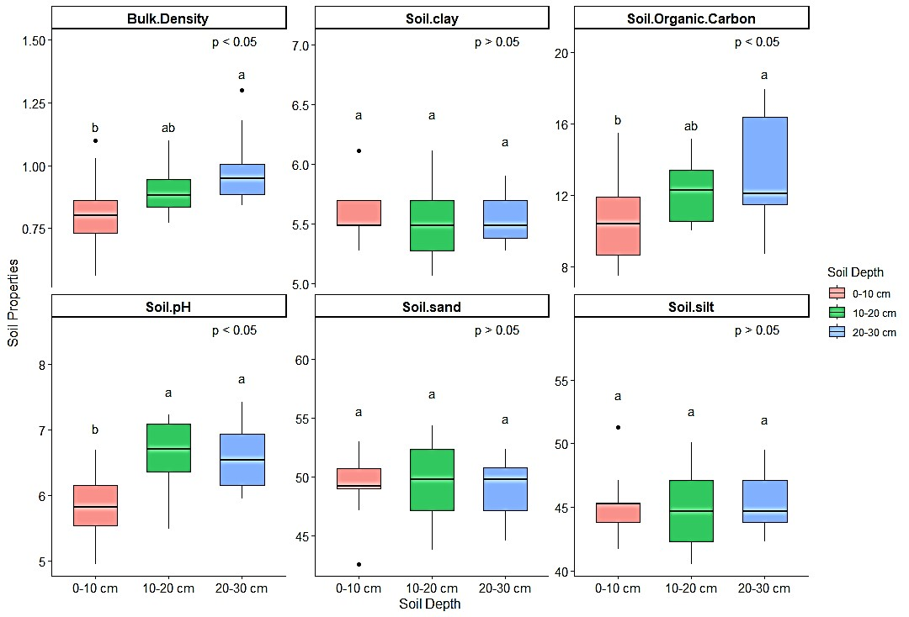

Research

Research Summary
This study assessed the spatial and temporal patterns of HLC in Parbat district and evaluated the economic losses associated with leopard-related incidents. Data were collected from Division Forest Office records (2077-2081) and analyzed using descriptive statistics, chi-square tests, and linear regression. Findings reveal that Kushma Municipality experiences the highest livestock depredation, with most attacks occurring in winter and at night. Statistical analysis (χ²=32.48, p<0.05) confirmed seasonal variations in depredation trends, and regression analysis (27.8x, R² = 0.88) indicated an increasing trend. Economic losses from leopard attacks totaled Rs. 67,20,849, with only 44.16% of cases receiving compensation after a year, exacerbating negative perceptions toward leopards. The study highlights the need for predator-proof corrals, improved livestock insurance, and timely compensation to mitigate conflict and foster coexistence.
Research Summary
We quantified vegetation carbon and soil organic carbon (SOC) across three forest types¬; Shorea robusta, Pinus roxburghii, and mixed broadleaved forests — using 19 nested circular plots (500 m²) and stratified soil sampling to 80 cm depth. Fourteen predictors representing stand structure, anthropogenic disturbance, soil properties, topography, and climate were evaluated using correlation and PCA. Shorea robusta forests stored significantly higher vegetation carbon (113.5 ± 7.1 Mg C ha⁻¹) and SOC (102.0 ± 2.3 Mg C ha⁻¹) than the other forest types. At the plot scale, basal area and canopy cover were the strongest positive predictors of tree carbon, while anthropogenic disturbance exerted a negative effect with a correlation coefficient of -0.600. SOC was primarily regulated by soil texture (positive with silt, negative with sand), with canopy cover as the only significant structural correlate. PCA confirmed that stand structure and disturbance dominated vegetation carbon variation, whereas soil texture anchored SOC patterns.


Research Summary
This study quantified total carbon stock across five carbon pools: aboveground biomass, belowground biomass, litter, deadwood, and soil organic carbon (SOC) in the Banpale Schima–Castanopsis forest in Kaski district. A total of 15 randomly distributed plots were established following standard forest inventory protocols, and biomass was estimated using allometric equations. Soil samples were collected at three depth intervals (0–10 cm, 10–20 cm, and 20–30 cm) to assess SOC variation. The results showed that total tree carbon stock was 98.11 ± 6.45 Mg C ha⁻¹, with Schima wallichii and Castanopsis indica contributing the majority. Vegetation carbon (108.16 ± 6.54 Mg C ha⁻¹) exceeded soil organic carbon (36.07 ± 1.45 Mg C ha⁻¹), supporting the dominance of biomass carbon in this forest type.
What's Next for Me?
I am currently looking for Research Assistantship / Teaching Assistantship opportunities to pursue my Master's degree. Furthermore, I want to pursue my further study in research based subject with research areas including forest ecology, forest carbon dynamics, soil ecology, dendroecology, and fire ecology analysis through ecological modeling techniques, and statistical data analysis using laboratory and remote sensing methods.